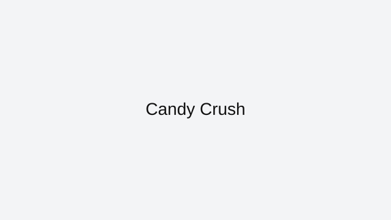

Candy Crush is a browser-friendly match-3 game on ArcadeZone that plays instantly in your web browser. This page explains the core rules, the best way to approach each session, and how to enjoy Candy Crush without downloads or extra installs.
This browser version of Candy Crush fits the category of puzzle games that are built for fast playing and repeat sessions. Puzzle games are chosen for their thoughtful challenge, relaxing gameplay, and smart problem-solving.
Controls are simple enough for quick games and satisfying enough for longer play. Swap tiles or pieces to create matches and clear the board efficiently. You can play Candy Crush on desktop or mobile, depending on the browser and the page version.
To improve in Candy Crush, focus on the most important idea for the genre: match-3 games often reward good timing, pattern recognition, and steady progress. This page also includes practical tips that help you find the right pace and avoid common mistakes while playing. If you enjoy match-3 games, try Sudoku, Mahjong, and Cut the Rope next. All of these are listed on the ArcadeZone All Games page for quick access.
ArcadeZone keeps this Candy Crush page clean and easy to use, with a strong focus on playability and helpful guidance. Bookmark this page if you want faster access to Candy Crush and other browser classics from the ArcadeZone collection.
Candy Crush is featured here because it offers a polished browser experience with fast loading and easy access from any modern device.
This page also covers what makes Candy Crush work well online and how to get the most out of every session.
When you want a quick game break, Candy Crush delivers simple play mechanics and satisfying goals without distractions.
Each section on this page is designed to help you understand the controls, learn good strategy, and avoid common mistakes.
What you'll love
Instant browser access with no downloads or installations required.
Practice your logic and pattern skills with a calm, focused puzzle experience.
A clean, mobile-ready page helps you learn the controls and start playing immediately.
Game essentials
Category: Puzzle
Game type: Match-3
Best for: brain training and thoughtful challenges
Controls: swipe or click to match tiles and clear the board

Screenshot: Candy Crush
How to play
Use click or touch controls to move pieces, solve levels, and build the right pattern before time runs out.
Tips & Tricks
Slow down and look for the best move rather than the first move that seems possible.
Many puzzle games reward planning ahead more than fast clicking.
If a level feels difficult, step back and re-evaluate the objective before replaying.
Play
If the game embeds elsewhere, link to the source or use an embed iframe with proper attribution.
ArcadeZone provides this page as a guide to Candy Crush. Wherever possible, we link directly to the game’s browser-ready version and credit the original creators. If you want more browser game recommendations, visit the All Games page.